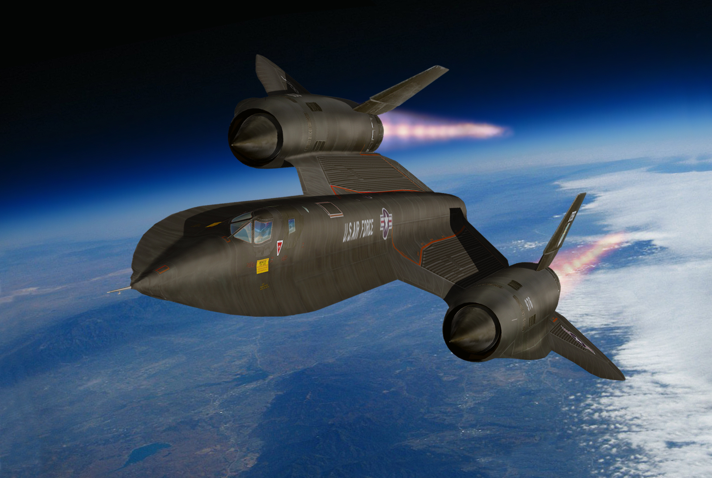

Lockheed SR-71

INICIO
El Lockheed SR-71, conocido también de manera extraoficial como Blackbird ('mirlo' en español) y por sus tripulantes como Habu, fue un avión de reconocimiento estratégico de largo alcance capaz de superar la velocidad de Mach 3, hasta ahora el avión tripulado más rápido del mundo (no se tiene en cuenta el avión experimental North American X-15, puesto que nunca llegó al servicio activo)